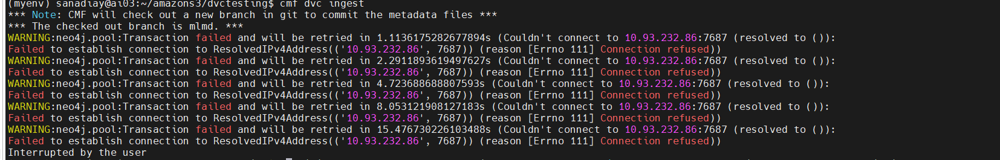

Guide to cmf dvc ingest Command¤
The cmf dvc ingest command is used to ingest metadata from the dvc.lock file into the CMF Server. If an existing MLMD (Metadata) file is provided, the command will merge and update execution metadata based on matching commands or create new executions if none exist.
📌 Steps to Get Started¤
Follow the steps below to set up cmf client and use the dvc ingest command.
1. Navigate to Your Project Directory¤
Open your terminal and go to the directory (for e.g., example-get-started) where you want to use cmf commands.
cd /path/to/your/project
2. Initialize cmf with Neo4j Credentials¤
Use the following command to initialize cmf. You can choose from various storage options like local, ssh, amazons3, osdfremote, or minios3.
Basic Usage (Required Parameters Only):
cmf init local \
--path /path/to/local-storage \
--git-remote-url https://github.com/user/experiment-repo.git
With Optional Parameters (including Neo4j):
cmf init local \
--path /path/to/local-storage \
--git-remote-url https://github.com/user/experiment-repo.git \
--cmf-server-url http://x.x.x.x:80 \
--neo4j-user neo4j \
--neo4j-password password \
--neo4j-uri bolt://x.x.x.x:7687
🔁 Replace the following: -
x.x.x.xwith your IP address - For--path, provide an absolute path to a directory outside of the current working directory which will serve as the artifact repository for artifacts across all CMF pipelines. - Provide your correct Neo4j username and password
3. Start the Neo4j Server¤
Start the Neo4j server using Docker. Follow the guide provided below:
4. Create a dvc.yaml File¤
Inside your project directory (for e.g., example-get-started), create a dvc.yaml file.
Here’s a sample dvc.yaml:
stages:
prepare:
cmd: python src/parse.py artifacts/data.xml.gz artifacts/parsed/
deps:
- artifacts/data.xml.gz
outs:
- artifacts/parsed/train.tsv
- artifacts/parsed/test.tsv
featurize:
cmd: python src/featurize.py artifacts/parsed/ artifacts/features/
deps:
- artifacts/parsed/train.tsv
- artifacts/parsed/test.tsv
outs:
- artifacts/features/train.pkl
- artifacts/features/test.pkl
train:
cmd: python src/train.py artifacts/features/ artifacts/model/
deps:
- artifacts/features/train.pkl
- artifacts/features/test.pkl
outs:
- artifacts/model/model.pkl
test:
cmd: python src/test.py artifacts/model/ artifacts/features/ artifacts/test_results/
deps:
- artifacts/model/model.pkl
outs:
- artifacts/test_results/prc.json
- artifacts/test_results/roc.json
- artifacts/test_results/scores.json
⚠️ Be Consistent with deps and outs:
When defining deps and outs in your dvc.yaml, ensure consistency in the format used. Either define both as directories (e.g., artifacts/parsed/) or both as individual files (e.g., artifacts/parsed/train.tsv, artifacts/parsed/test.tsv).
5. Remove cmf code from src Directory¤
Ensure that your source files inside the example-get-started/src directory do not contain any cmf-related code. Keep them clean and focused on their tasks.
6. Run the DVC Pipeline¤
Execute your pipeline using the following command. This will also generate a dvc.lock file.
dvc repro
7. Ingest Metadata with cmf¤
Run the following command to create metadata file based on your dvc.lock file:
cmf dvc ingest
⚠️ Troubleshooting:
If you see an error like the one below, your Neo4j server might not be running properly.

8. Push/Pull Metadata and Artifacts¤
Use CMF Client commands to push or pull your metadata and artifacts as required:
cmf metadata pushcmf metadata pullcmf artifact pushcmf artifact pull